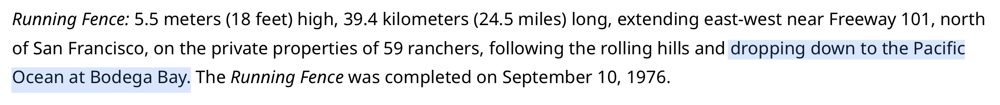
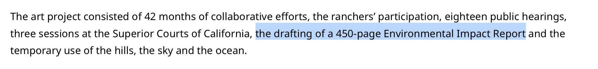
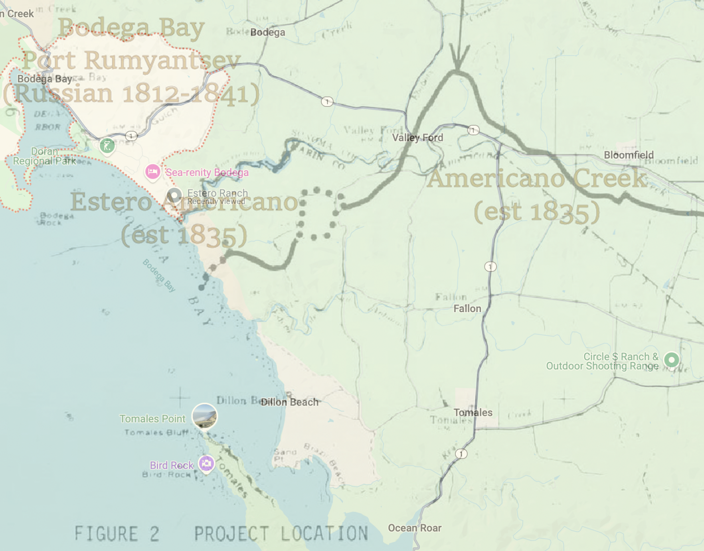

Where in the World is Christo Javacheff? (Solution)
BACK
Puzzle Author: me :D
ANSWERS:
1. Running Fence, 39.4 km
2. Bodega Bay
3. 507ºF
4. WestPoint Home, Inc.
5. 38.281º N, 122.993º W
Next, we need to figure out where this Fence actually is. Checking Christo and Jeanne-Claude's website reveals that this work spans from near Freeway 101 to "the Pacific Ocean at Bodega Bay":

This is where we have to start doing some digging. The Wikipedia page says that Running Fence (hereby referred to as 'it') was made with "heavy woven white nylon fabric", which comes from the artists' website. There is, however, mention of a 450-page Environmental Impact Report (a draft of which is available on archive.org) that goes into further detail ...

Page 12 of the document reveals that this material is 'white "Nylon 6,6, manufactured by J.P. Stevens & Company, Inc., New York', giving us ground for our third and fourth answers. The Wikipedia page for nylon 6,6 reports a melting point of 507ºF, and the page for J.P. Stevens & Company, Inc., New York informs that this company was consolidated as part of a merger, creating WestPoint Home, Inc.All that's left to do is find the 'western terminus', which can be done using some of the maps in the report. Overlaying the map on page 6 with a screenshot from Google Maps (as shown below), we can find the western terminus around 38.28ºN, 123ºW
